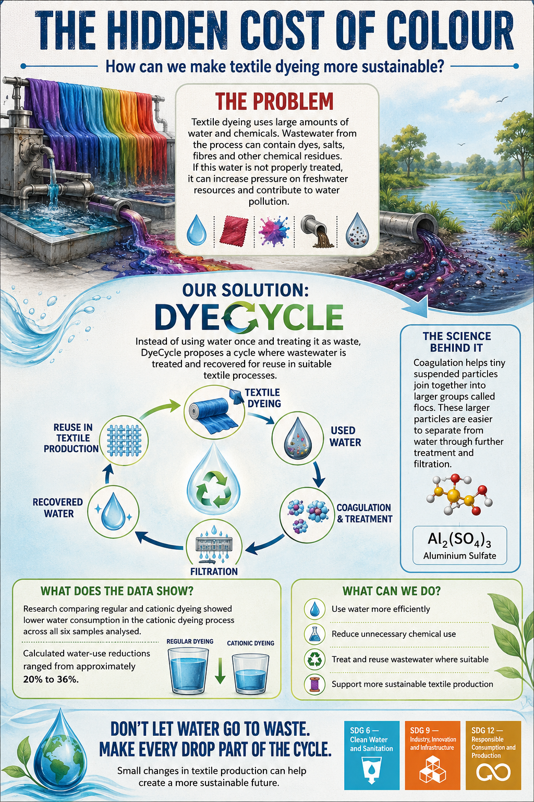

COTH — AWARENESS POSTER
Spreading Awareness
Through Communication
Communicating the importance of sustainable textile production through visual awareness.
📢 Key Ideas Communicated
💧 Water use in textile dyeing
🧪 Chemical residues in textile wastewater
♻️ Our DyeCycle solution
🔬 The science behind wastewater treatment
📊 Research-based water-use data
🌱 Actions for more sustainable textile production
🖼️ The Poster
Our awareness poster brings together the key ideas from our textile sustainability project and communicates them in a clear visual format.
